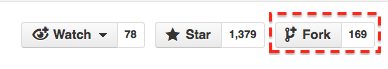
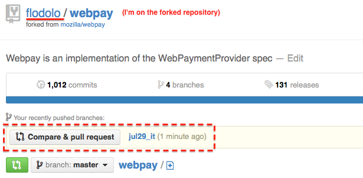
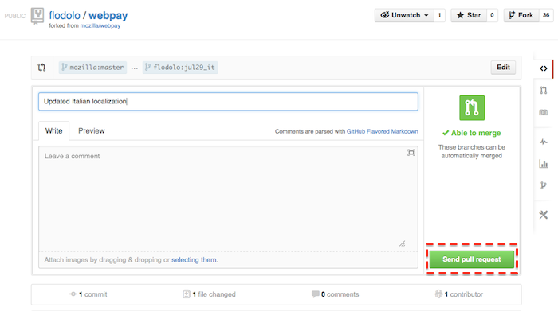
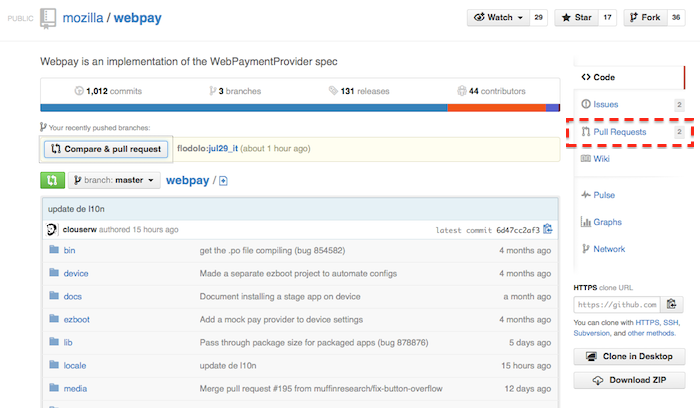

Basic Git for localizers
Fork a repository
If you don't have an account on GitHub, register one for free on github.com and install git on your system.
Once you login, go to the repository you're interested in and create a "fork". Let's say you want to create a fork of webpay: go to github.com/mozilla/webpay and click on the Fork button on the top right.
This will create a fork (think of it as a copy) of the webpay repository in your own account.
Clone your forked repository
Now you have to clone the repository on your computer. Suppose that your username is l10nguy, you need to clone https://github.com/l10nguy/webpay and tell the system that you want to use the original Mozilla repository as a source for updates.
These are the commands you need to run in your terminal (move into the folder where you want to keep your files before running them):
# You're cloning your forked repository, so github.com/YOURUSER/REPOSITORY git clone https://github.com/l10nguy/webpay # You're telling Git to use another repository as a source # So not YOURUSER but MOZILLA in this case git remote add upstream https://github.com/mozilla/webpay
Update your forked repository
Now you have a local copy of your fork inside the folder webpay. When you want to update your local copy you need to run these commands from inside the repository (i.e. the webpay folder).
# Important: the follow line will delete every local change. It's useful to # avoid conflicts and merges, if you know what you're doing you can ignore it git stash # Ensure that you're on the branch called Master git checkout master # Pull changes from Mozilla's repositories, merge to your repository and push # changes to Github git fetch upstream git merge upstream/master git push
Provide your GitHub's credentials and the updates will be pushed to your GitHub's repository.
Create a pull request to update your locale
As a first step you need to create a branch in your repository, so you have to choose a name. For example let's call this branch jul29_it
# Create the branch git branch jul29_it # Ensure that you're on the branch just created git checkout jul29_it # Push the new branch to your repository on GitHub git push origin jul29_it
At this point your local files are on the branch called jul29_it (you can always check the current branch or the files modified by running git status). Update the .po files and when you're ready commit your changes using these commands. In this case I'm updating Italian and the file is locale/it/LC_MESSAGES/messages.po (don't commit .mo files, they're compiled from .po and not necessary).
# Add the updated file to the commit git add locale/it/LC_MESSAGES/messages.po # Commit with a meaningful message git commit -m "Updated Italian localization" # Push changes to GitHub git push
Now you can go to your forked repository on GitHub and you will see something like this.
Click on the button Compare & pull request, check the pull request (you can see the diff on the bottom of the page) and if everything looks good click on the green button Send pull request to complete the procedure.  You'll receive an email when the pull request is merged into the project, or if there's a problem with the pull request and someone added a comment. If necessary, you can modify or close your pull request from the project's pull requests list (select your pull request, the Close button is at the end of the screen). 
Final suggestions
- If something goes wrong, you can always delete your forked repository and start from scratch, or return to the branch Master (see Update section) and create a new clean branch to start from. As a personal suggestion, don't ever commit to Master, just create new branches for your own changes.
- Always update your forked repository before creating new branches.
- If you create a pull request from the branch jul29_it and push other commits to the same branch, the pull request will be automatically updated. In other words: if you don't want to change your original pull request, don't push to that branch until the pull request is approved and merged.
Note: this doc is available on GitHub. If you want to improve it, you should know how do it now ;-)
Last updated: 2013-08-06